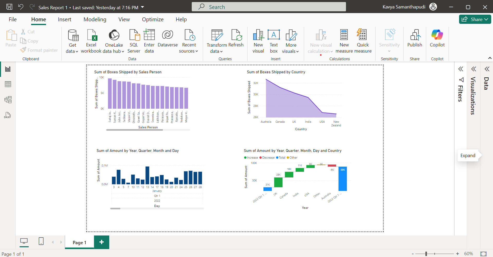

Sales Dashboard
The Sales Dashboard provides a comprehensive analysis of sales data, including the following visualizations:

Graph Descriptions
- Sum of Boxes Shipped by Sales Person: This bar chart displays the total number of boxes shipped by each sales representative, helping identify top performers.
- Sum of Boxes Shipped by Country: This line chart illustrates the distribution of boxes shipped across different countries, showing which markets are most active.
- Sum of Amount by Year, Quarter, Month, and Day: A bar chart breaking down revenue trends over various time intervals to highlight seasonality and growth patterns.
- Sum of Amount by Year, Quarter, Month, Day, and Country: A waterfall chart showcasing revenue increases and decreases across regions and time periods.
Dataset and Reports
You can download the dataset and detailed reports below:
HR Dashboard
The HR Dashboard provides a detailed overview of employee data and metrics, helping to analyze workforce trends and distributions effectively. Below are the key visualizations:

Graph Descriptions
- Key Metrics Table: Displays essential employee data such as the total number of employees, average age, and salary statistics (minimum, maximum, and average). This provides a high-level summary of the workforce.
- % of Employees by Gender: A pie chart showing the gender distribution of employees, with the percentage of male and female employees.
- % of Employees by Status: A pie chart illustrating marital status distribution among employees, categorized into Married (M) and Single (S).
- No. of Employees by Age: A bar chart that breaks down the number of employees into age brackets (25–34, 35–44, 45–54, and >55 years), helping visualize age distribution in the organization.
- No. of Employees by Salary: A bar chart categorizing employees based on salary ranges (e.g., 0–999, 2000–2999, 3000–3999, and 4000–4999), providing insight into salary distribution.
Dataset and Reports
You can download the datasets and an additional reference image below: